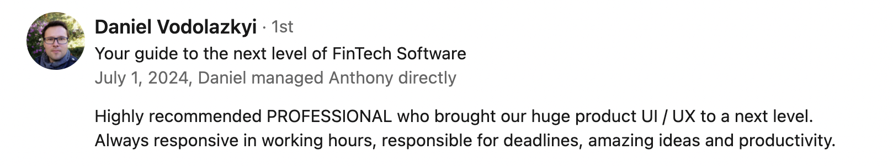

I also should mention that this case is still a work in progress, and I regularly add new details here
Fintech Software for managing crypto and fiat assets
Industry: Fintech, Blockchain, Crypto
Company: TuneX LLC (Start-up)
My role: UX/UI designer
I interacted with cross-functional teammates like engineers, program managers, QA and stakeholders
Marionette.dev is a successful fintech project that serves several clients around the world and has increased its service costs by 30% in one year. I am proud that I contributed to get this project off the ground, and next I will describe how.
When I joineded the team the main problem was, the company already had the technology and planned to upgrade and develop it furthermore, but no one knew how to start, and this was the main problem. I only got low-fidelity wireframes of a possible product without a clear vision of what it should be.
It was a real challenge for me to start. I had no experience in fintech before and didn't know much about blockchain. However, I used my other skills to gather all the necessary information to get started.
How it started
It was my first project in a UX designer role. Before this, I worked and developed in the digital marketing field, but when war came to my country (24 Feb 2022), I lost all my projects.
So, I decided to move into design because I had considered this before and also already had some related skills from marketing, such as graphic design, ux-foundations, audience interaction, data analysis etc.
The problem
Initially, stakeholders provided a brief overview of the project, and I was eager to start. Unfortunately, this eagerness led me to begin updating the existing low-fidelity wireframes without fully understanding the project scope. This approach proved to be a mistake, as I soon found myself inundated with numerous edits that did little to help me progress. It seemed I was stuck at the beginning.
Realizing the need for a better foundation, I decided to conduct thorough research. I gathered input information, which improved my understanding of the project and the relevant field.
Research and First Outcome
It was a start-up, and we didn’t have enough budget to conduct primary research like user interviews. Instead, I studied available cases of other companies with similar products, analyzed competitors and looked at decisions of different designers on Dribbble. I also created references board with cool ideas. I think it is a really good approach to gather initial information if a company has a limited budget.
So, after this, I provide calls with stakeholders, and together we defined the main points (based on the gathered information from my research) that needed to be implemented in the new update. We determined what the product is, who the target audience is, and what problems the product solves. We summarized this in one phrase:
Waht: Fintech solution
For who: For business owners (B2B model)
How: Manage crypto and fiat assets
p.s. Yes, all of these points (what, for who, how) we also described more deeper in our documentation
All of these helped us (me, team, stakeholders) to define the product we were working on and more clear to understand the main direction. Only then, I started to work with wireframes.
▾ Wireframes company had
Wallet and Trading pages (web & mobile), and there were everything what company had. I tried to made something with this but without initial project info I had got a lot of edits only :(
▾ Final version
I updated wireframes and they become correspond to reality. You can see it in screens bellow. I tried to consider team and stakeholders demands while design this.
Step by step, I created new functional screens, considering the abilities of our engineers. While I still received edits, they became more constructive and were based on my recent research.
Our communication also became easier. All of these factors helped me consistently move forward.
How I measured success?
I created new layouts > team approved > engineers develop > owners are satisfied.
Feedback from LinkedIn:
I also consider it a success that our stakeholders acquired new clients and increased the cost of services. This achievement was the result of a huge team effort over the past two years.
I was part of a talented team and did my job alongside very smart individuals who aimed to revolutionize the industry with their product. I am proud to have contributed to initiating the process and defining the product's perspective.
Currently, marionette.dev serves several clients globally as an exchange platform.